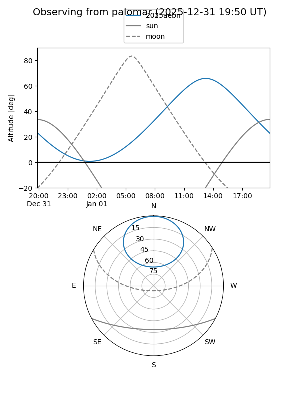

2025aebn
Target 2025aebn at 2026-01-09 12:49
Aliases and brokers:
FINK: link
Lasair: link
ALeRCE: link
TNS: link
YSE: link
alt names
ZTF25aceglii (ztf,fink_ztf)
2025aebn (tns,yse)
ATLAS25ows (atlas)
Coordinates:
equatorial (ra, dec) = 182.4687,+57.57254
equatorial (HMS+DMS) = 12:09:52.48,+57:34:21.14
galactic (l, b) = (133.6553,+58.68202)
Flags:
Photometry:
last ztfr=19.73
3 ztfr detections
Lightcurve

Visibility


Additional plots